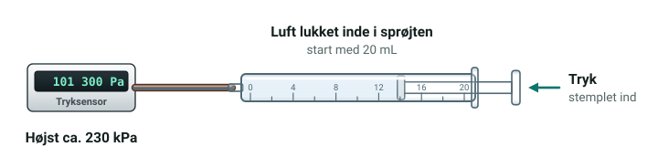
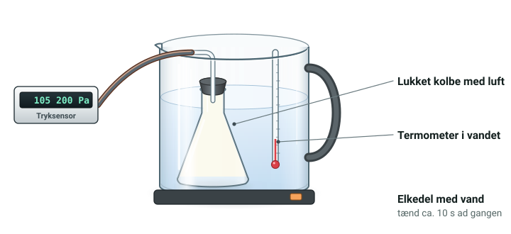

Modul 1 · Fysik › Modulplan › Arbejdsark
Idealgasligningen 1: tryk, volumen og temperatur
Forløbet handler om, hvor meget en ballon kan bære. Det afhænger af, hvordan gassen i ballonen opfører sig. I dag tager I udgangspunkt i idealgasligningen og undersøger to af dens særtilfælde: sammenhængen mellem tryk og volumen og sammenhængen mellem tryk og temperatur. I samler data i en tabel og finder sammenhængen med regression i Graphical Analysis.
Teori: Idealgasligningen
En gas består af molekyler, der farer rundt og støder mod beholderens vægge. Stødene giver gassens tryk. Jo varmere gassen er, jo hurtigere bevæger molekylerne sig. Sammenhængen mellem tryk, volumen, stofmængde og temperatur er idealgasligningen: p · V = n · R · T.
p er trykket i Pa (1 kPa = 1000 Pa, og lufttrykket er ca. 1,013 · 105 Pa). V er volumenet i m3 (1 mL = 10−6 m3). n er stofmængden i mol, T er temperaturen i kelvin (T = t + 273), og R = 8,314 J/(mol · K) er gaskonstanten.
I dag er det den samme luft, der er lukket inde hele tiden, så n er konstant. Holder man også T eller V konstant, bliver sammenhængen mellem de to andre størrelser simpel.
1Boyle-Mariottes lov: tryk og volumen

Træk stemplet ud til 20 mL, og kobl så sprøjten til tryksensoren. Tryk stemplet roligt ind til hvert volumen i tabellen, og notér trykket. Stop ved 10 mL: Tryksensoren kan kun måle op til ca. 230 kPa. Hold kun kort om sprøjten, så jeres hænder ikke varmer luften.
Isolér trykket p i idealgasligningen. n, R og T er konstante. Hvilken slags regression skal I lave, når I tegner p som funktion af 1V?
Hjælp
Del med V på begge sider: p = n · R · T · 1V. Konstanterne foran kan samles i ét tal.
Sæt ring om:
| V i mL | V i m3 | p i Pa |
|---|---|---|
| 20 | 2,0 · 10−5 | |
| 18 | 1,8 · 10−5 | |
| 16 | 1,6 · 10−5 | |
| 14 | 1,4 · 10−5 | |
| 12 | 1,2 · 10−5 | |
| 10 | 1,0 · 10−5 |
Skriv volumenet i m3 og trykket i Pa ind i Graphical Analysis. Lav en beregnet kolonne med 1V, tegn p som funktion af 1V, og lav regressionen. Skriv forskriften.
Giv en fysisk fortolkning af hældningen. Hvilke størrelser fra idealgasligningen gemmer sig i den, og hvilken enhed har den?
Hjælp
Sammenlign jeres forskrift med p = n · R · T · 1V. Pa · m3 er det samme som J.
2Gay-Lussacs lov: tryk og temperatur

Kolben er lukket med en prop og koblet til tryksensoren, så luften ikke kan slippe ud. Stil kolben i elkedlen, og fyld koldt vand fra hanen i, så det når op til kolbens hals. Varm vandet i små skridt: Tænd elkedlen i ca. 10 sekunder, og sluk den igen. Rør rundt med termometeret, og vent, til trykket ikke stiger mere. Først da har luften i kolben samme temperatur som vandet. Aflæs vandets temperatur og trykket, og fortsæt til ca. 80 °C.
Isolér trykket i idealgasligningen. Nu er n, R og V konstante. Hvilken slags regression skal I lave, når I tegner p som funktion af temperaturen T i kelvin? Og når I bruger temperaturen t i °C?
Hjælp
p = n · RV · T. I kelvin går linjen gennem (0, 0). I °C er den forskudt 273 grader.
| t i °C | p i Pa | T i K |
|---|---|---|
Tegn p som funktion af t i Graphical Analysis, og lav en lineær regression. Find skæringen med temperaturaksen, hvor p = 0. Den temperatur kaldes det absolutte nulpunkt.
Hvorfor kan luften ikke blive koldere end det absolutte nulpunkt? Tænk på, hvad trykket kommer af.
Lav en kolonne med T = t + 273, og tegn p som funktion af T. Hvilken regression passer nu, og hvad er den fysiske betydning af hældningen?
3Hvad mangler?
I begge forsøg var stofmængden konstant. Hvad tror I, der sker med volumenet, hvis der kommer dobbelt så mange molekyler i sprøjten, mens trykket og temperaturen er de samme? Det undersøger I i kemi næste gang.
Lektie til næste gang: Læs Kemibogen C5.6 Gasser (repetition fra 1g).